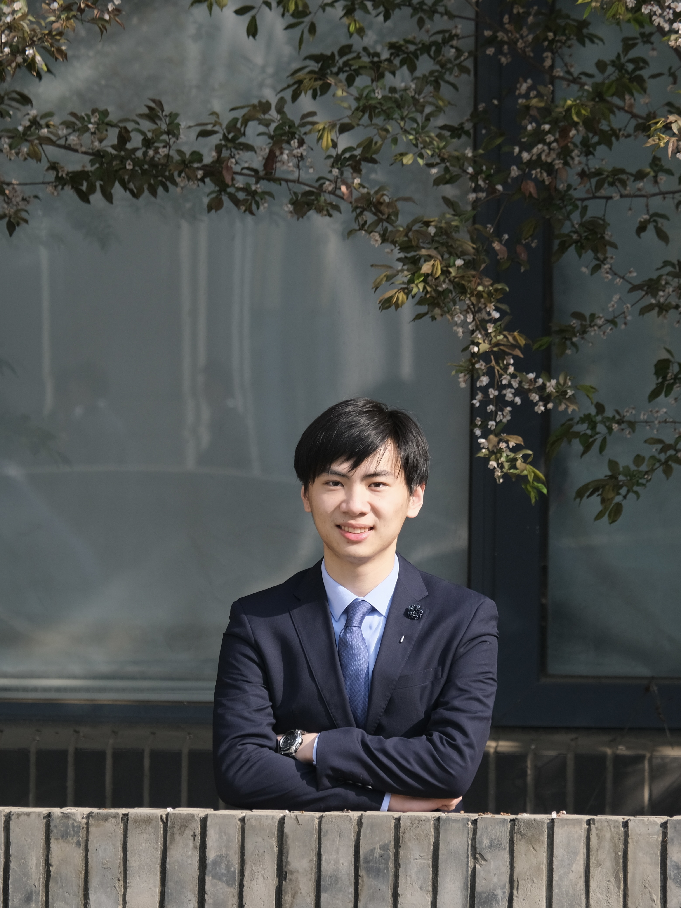

|  |
Yuxing Chen (陈煜星)I am currently a senior undergraduate student at the School of Physics, Peking University, advised by Professor Wang He. My main research interests include: physics simulation, fabric manipulation and dexterous hand. Feel free to contact me via email. |